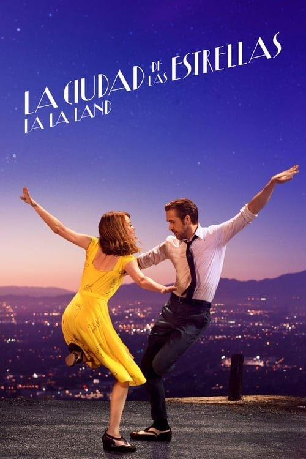

La ciudad de las estrellas (La La Land) (2016)
Sinopsis Rápida
En la vibrante ciudad de Los Ángeles, dos artistas aspirantes se cruzan en un torbellino de sueños, amor y desilusión, dejando una huella imborrable en sus vidas.
Sinopsis Detallada
La La Land sigue el camino entrecruzado de Mia, una aspirante a actriz, y Sebastian, un pianista de jazz dedicado. Mientras sus carreras profesionales despegan y se enfrentan a los desafíos de la industria del entretenimiento, su romance florece en medio de la magia y la melancolía de Hollywood. La película explora temas universales como la ambición, el sacrificio y la búsqueda de la felicidad, todo envuelto en una exquisita coreografía y una banda sonora inolvidable.
¿Por qué tenés que verla?
- Una historia de amor inolvidable, llena de emociones y momentos icónicos.
- La banda sonora, compuesta por Justin Hurwitz, es una obra maestra que eleva la experiencia cinematográfica.
- La película ha dejado una marca indeleble en la cultura popular, siendo reconocida por su estética y narrativa.
- Excelente actuación de Ryan Gosling y Emma Stone.
Idea Extra
Análisis de la estética visual y el simbolismo en La La Land: un viaje a través del color, la iluminación y la composición.